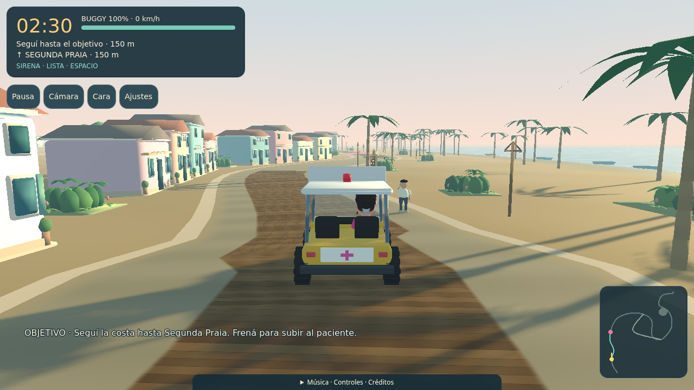
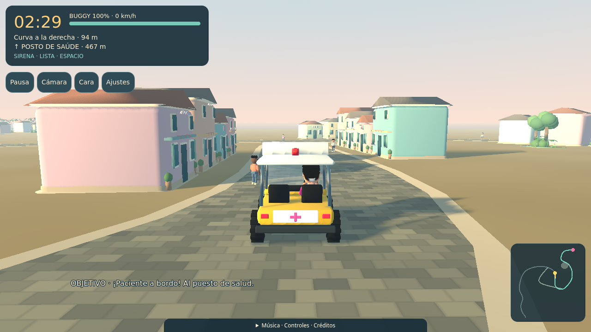
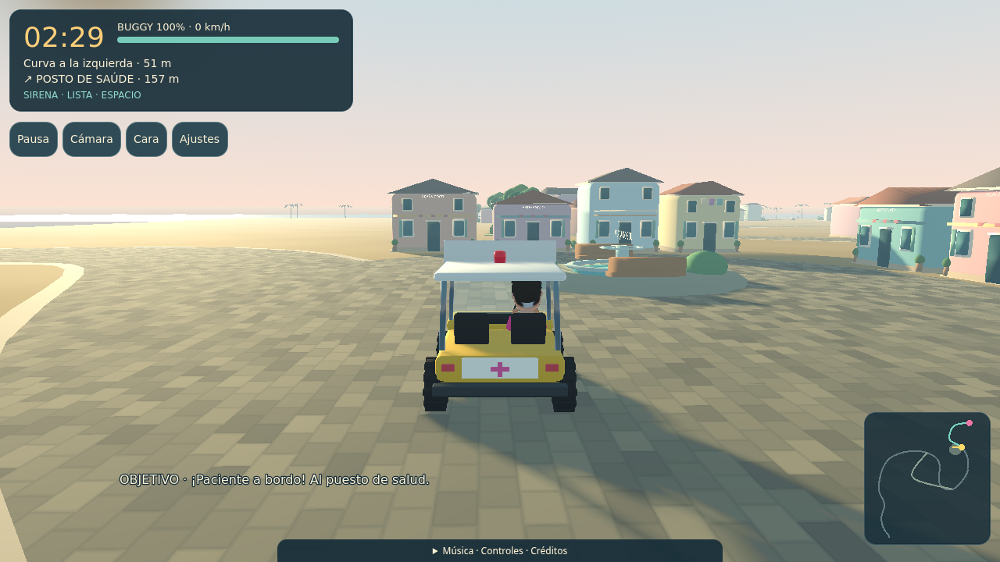
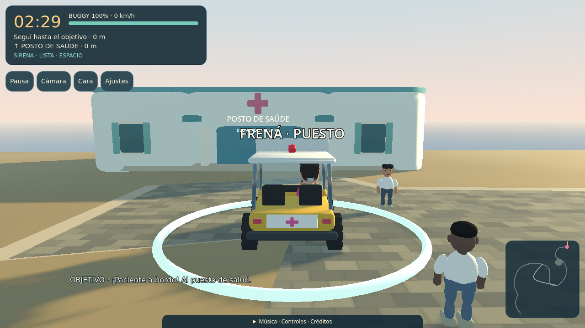

80 edificios · Un pueblo y su paseo costero
La dirección compacta y la referencia de playa recibieron la indicación «Perfecto, continua». El acabado se extendió a costa, comercio, plaza y puesto. Se conserva el protagonista aprobado. La fotografía guía el uso de madera, cuerdas, postes y vegetación; el juego mantiene el amanecer.
Jugar en Pages → · Probar localmente → · Estado de las verificaciones
80 parcelas; separación entre paredes de la primera hilera de aproximadamente 1,8 m. El ancho de conducción y el margen vial de tres metros se conservan. Los nuevos sólidos del paseo comparten sus huellas con las colisiones.
Antes y después
Posiciones y orientaciones de conducción reproducibles, calidad Alta y resolución 1280×720. El nuevo piso de madera ajusta ligeramente la altura visual del vehículo.

Tablas que siguen la curva, hombros transitables, vegetación agrupada y elementos de madera inspirados en la referencia.
Comercio: continuidad de fachadas y locales orientados a la calle.
Plaza: construcciones que enmarcan el espacio abierto y sus accesos.
El puesto conserva posición, señalización y área de llegada.Recorrido por el primer tramo
 Distancia desde la salida: 0 metros.
Distancia desde la salida: 0 metros.Seis posiciones controladas a lo largo de 75 m para revisar la composición. No representan una medición de fluidez. El juego y los recorridos con entradas se verifican por separado.
Plano completo
Disco: 12Costa: 18Comercio: 26Plaza: 14Puesto: 10
 Las líneas claras indican el frente de las casas. El borde del camino representa el margen lateral protegido.
Las líneas claras indican el frente de las casas. El borde del camino representa el margen lateral protegido.Las mediciones de software verifican presupuestos de dibujo y funcionamiento. GPU y teléfonos reales, junto con la prueba humana de balance, se documentan como pendientes en el informe.